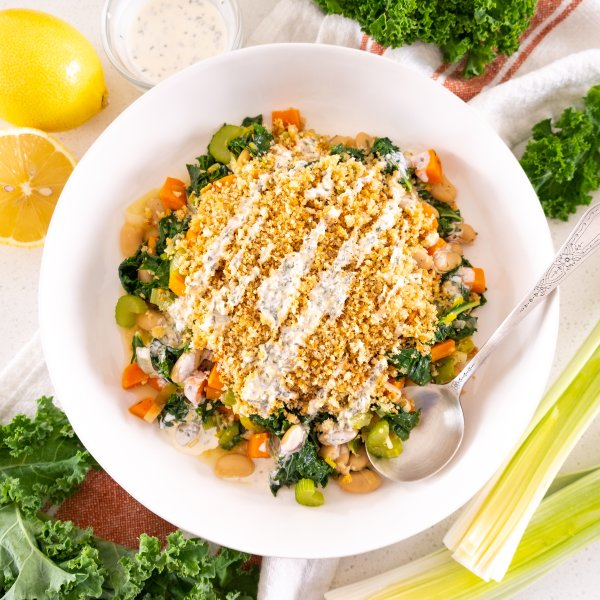

White Bean-Kale "Cassoulet" with Parmesan Bread Crumbs & Lemon Sauce

Total Time
35 min
Nutrition (per serving)
580.1 kcalCalories
22.3 gProtein
60.6 gCarbs
29.7 gFat
Full nutrition table
| Calories | 580.1 kcal |
| Total fat | 29.7 g |
| Saturated fat | 6.4 g |
| Trans fat | 0.2 g |
| Cholesterol | 18.8 mg |
| Sodium | 523.6 mg |
| Carbohydrates | 60.6 g |
| Fiber | 12.1 g |
| Sugars | 12.1 g |
| Protein | 22.3 g |
| Potassium | 971 mg |
| Calcium | 227.3 mg |
| Iron | 5.2 mg |
| Vitamin A | 232.6 IU |
| Vitamin C | 64.8 mg |
| Vitamin D | 4.5 IU |
Cookware
Ingredients
- 2 (15 oz) canscannellini (white kidney) beans
- 4 mediumcarrots
- 2 stickscelery
- 8 fl ozchicken or vegetable broth
- 6 clovesgarlic
- 1 bunchkale
- 2leeks
- 1lemon
- 2 ozParmesan cheese
- black pepper
- extra virgin olive oil
- mayonnaise
- panko bread crumbs
- parsley flakes
- rosemary, dried
- salt
Steps
- Wash and dry the fresh produce.2 leeks
4 medium carrots
2 sticks celery
1 bunch kale
1 lemon - Drain and rinse beans in a colander; set aside to drain further.2 (15 oz) cans cannellini (white kidney) beans
- Trim off the root ends and dark green tops of the leeks, leaving only the white and pale green parts. Cut the leeks in half lengthwise and rinse under running water, separating the layers to remove any dirt and grit. Thinly slice crosswise and place in a medium bowl.
- Peel, trim, and medium dice carrots; trim and thinly slice celery. Add both to the bowl with the leek.
- Preheat a large ovenproof skillet over medium heat.
- While the skillet heats up, peel and mince garlic; add to the bowl with the veggies.4 cloves garlic
- Once the skillet is hot, add oil and swirl to coat the bottom. Add veggies and salt to the skillet; cook, stirring occasionally, until softened, 3-4 minutes. (Reserve bowl for later use.)2 tbsp extra virgin olive oil
½ tsp salt - Meanwhile, fold kale leaves in half lengthwise and slice off the stems. Chop or tear leaves into bite-sized pieces.
- When the veggies have softened, add kale, beans, broth, and spices to the skillet; stir to combine and bring to a simmer. Once simmering, reduce heat to medium and cook, stirring occasionally, until beans and kale are tender, 8-10 minutes.8 fl oz (1 cup) chicken or vegetable broth
1 tsp rosemary, dried
1 tsp parsley flakes
1 tsp salt
½ tsp black pepper - Meanwhile, peel and mince additional garlic; finely grate Parmesan. Place both in the reserved bowl along with bread crumbs, oil, and pepper; use your hands to combine the bread crumb mixture.2 cloves garlic
2 oz Parmesan cheese
1 cup panko bread crumbs
4 tsp extra virgin olive oil
¼ tsp black pepper - Preheat oven to broil on high and position rack in the upper third of the oven.
- When the beans and kale are tender, remove from the heat, and top with an even layer of the bread crumb mixture. (Reserve bowl for lemon sauce.)
- Place skillet in the oven and broil until bread crumbs are golden brown and crisp, about 1 minute. Remove from oven.
- Meanwhile, wipe the reserved bowl clean with paper towels. Zest and juice lemon into the bowl, then add mayo, parsley flakes, and salt; whisk to combine the lemon sauce.¼ cup mayonnaise
1 tsp parsley flakes
⅛ tsp salt - To serve, divide "cassoulet" between plates or bowls and drizzle with lemon sauce. Enjoy!